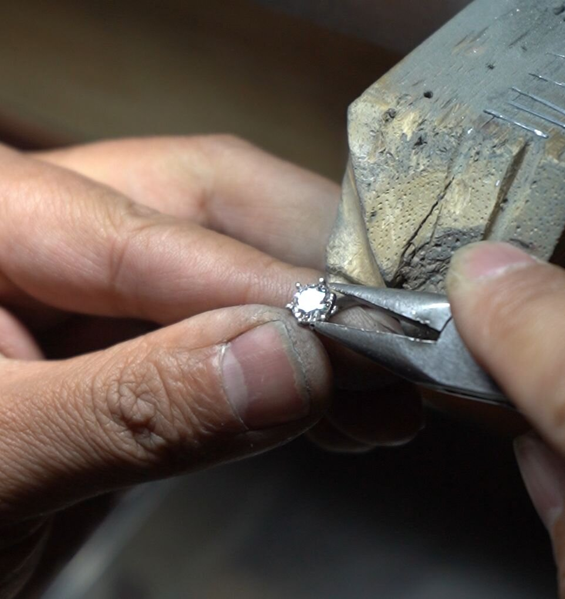
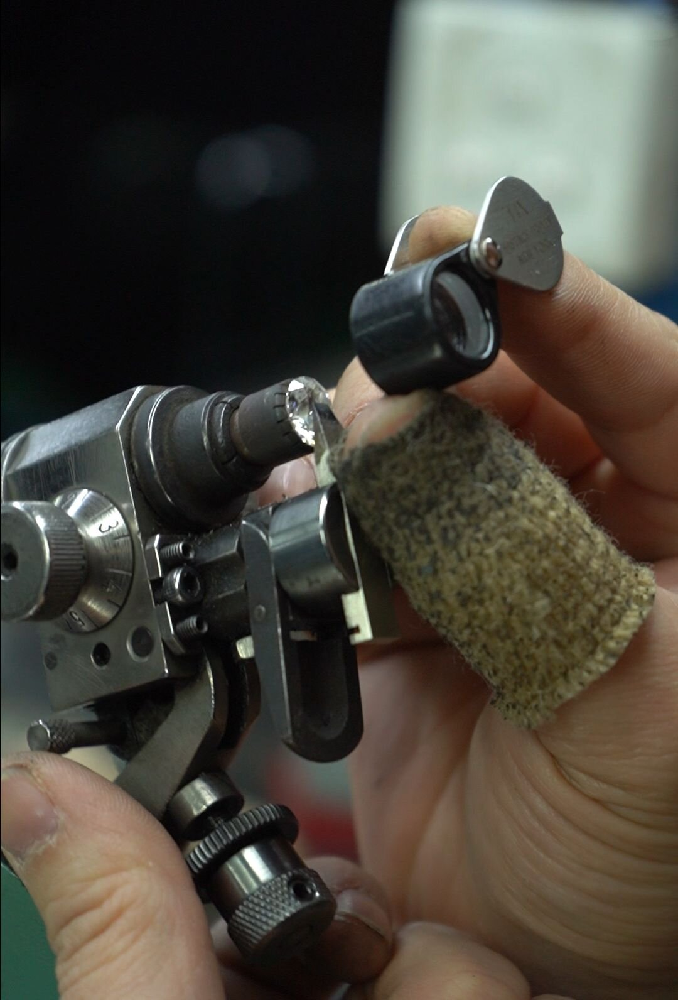

Quick Answers
How big is the memorial products market?
The global pet memorial products market was valued at USD 445.27 million in 2025 and is projected to reach USD 820.27 million by 2032, growing at a 9.12% CAGR [1]. The broader pet funeral services market stands at USD 1.7 billion (2025), heading to USD 3.6 billion by 2033 at 9.6% CAGR [2].
Which memorial segment is growing fastest?
The premium tier. Cremation jewelry compounds at roughly 12.4% CAGR through 2033 [6]; cremation diamonds at ~5.3% CAGR from a much higher per-unit base [9]. Premiumization is driven by pet humanization — 95 million US pet-owning households spending $158 billion annually [4] — and cremation adoption, now 79.49% of North American pet aftercare [4].
Where does the margin live in the memorial value chain?
In the manufacturing tier. Memorial diamonds are capacity-constrained by HPHT physics — roughly 18–25 days per growth run at ~5.5 GPa and ~1,450 °C — so brands with emotional-marketing skills increasingly rely on specialist manufacturers who own presses, hold quality run after run, and supply white-label documentation.
What does premiumization mean for a B2B supplier?
Premium retail is a supply-chain achievement before it is a marketing one: untreated colorless output (E–H), third-party traceability such as CCIC inspection, a published ~60-day turnaround, and patent-documented carbon handling are the specifications a premium brand's price architecture depends on.
Introduction: Three Questions Every Buyer Asks
Every B2B buyer evaluating the memorial category eventually asks the same three questions. How big is this market, really? Is the premium segment growing or shrinking? And where does the margin actually live?
Public reporting on the memorial industry is confusing by design: dozens of market-research publishers segment the same economy differently, quote overlapping numbers, and rarely distinguish between a $30 urn and a $5,000 diamond. This article does the layering work. We separate services from products, products from premium products, and then examine what "luxury" actually means in a category where the customer is grieving and the purchase is permanent. All figures are sourced to named publishers; where sources disagree, we show both and explain the difference.
The short version: the memorial economy is large, growing, and bifurcating. Volume is consolidating into value-priced cremation. Value is migrating to premium, personalized products. And the fastest-growing premium product is a laboratory-grown diamond. The methodology follows the same sourcing discipline as our 2026 industry trends analysis and regional demand analysis — named publishers, dated reports, no unattributed numbers.
The Layered Market: Sizing the Premium Memorial Economy
The first source of confusion is that "the memorial market" is not one market. It is at least four nested layers, each with its own size, growth rate, and competitive dynamics:
| Market layer | 2025 base | Projection | CAGR | Source |
|---|---|---|---|---|
| Funeral services (all, global) | USD 27.8 B (2025) | USD 41.9 B (2032) | 6.0% | Strategic Market Research [3] |
| Pet funeral services | USD 1.7 B (2025) | USD 3.6 B (2033) | 9.6% | Grand View Research [2] |
| Pet memorial products | USD 445.27 M (2025) | USD 820.27 M (2032) | 9.12% | 360iResearch [1] |
| Cremation jewelry (human + pet) | ~USD 305 M (2025) | ~USD 548 M (2030) | 12.4% | Archive Market Research [6] |
| Cremation diamonds | Not consistently published | 2026–2033 forecast | 5.3% | Market research summary [9] |
Three observations matter for a buyer.
First, the product layer grows faster than the service layer. Services compound at 6–9.6% [2][3]; memorial products compound at 9.12% [1]; cremation jewelry compounds at 12.4% [6]. The pattern is consistent across publishers: families spend relatively less on the ceremony and relatively more on what they take home.
Second, the diamond sub-segment publishes the least data — because it is the youngest and most concentrated. Cremation-diamond market reports exist [9], but the segment's revenue is small enough that major publishers fold it into cremation jewelry or "memorial keepsakes." That undercounting is itself a signal: the segment is earlier in its adoption curve than the jewelry category it disrupts.
Third, the human-side tailwind is measurable. The US cremation rate should reach roughly 64–65% in 2026 and continue toward CANA's 69.1% projection for 2030, with Canada crossing 80% around 2030 [4]. Every percentage point of cremation adoption expands the addressable market for cremation-linked memorial products — the dynamic we quantified region by region in our regional market analysis.
The Premiumization Engine: What Is Actually Driving the Premium Tier
Premiumization is often misread as "rich people buying expensive things." The data says something more specific is happening in memorial.
Pet humanization has created a permanent emotional premium. The American Pet Products Association's 2025 survey counts 95 million US households with a pet, and American pet spending reached $158 billion in 2024 [4]. Surveys across North America and Europe show more than 80% of pet owners view cremation as a respectful way to honor a companion, versus roughly 55% who consider burial acceptable [5]. When a household that spends four figures annually on a living animal faces end-of-life decisions, the historical budget ceiling — a $40 urn — is not a constraint. It is an insult.
Cremation adoption converts a burial expense into a memorial budget. Traditional burial bundles land, vault, and marker into one transaction controlled by the cemetery. Cremation unbundles everything: the family keeps the remains, takes them home, and faces an explicit choice about what to do next. In North America, cremation already accounts for 79.49% of pet funeral services (2024) [4]. Each of those cremations is a customer standing in a product market, not a service market.
Consumer behavior has bifurcated — and memorial sits on the premium side. Ghost Research's 2026 segmentation study found that 79% of global consumers traded down to value purchases in at least one category, while 54% simultaneously upgraded selectively to premium in categories that matter to them [7]. Memorial purchases are the extreme case of a category that matters: one-time, permanent, emotionally loaded, and identity-expressive. Good Grief Relief's 2026 deathcare review reports that 65% of consumers want memorials reflecting personal identity rather than generic templates, and sizes the broader memorial-products personalization market at $3.2 billion by 2030 [8].
The result is a barbell. Value-volume consolidates in direct cremation and commodity keepsakes. Premium value concentrates in certified, personalized, permanent materials — where a laboratory-grown diamond is currently the highest rung on the product ladder.
What Counts as "Luxury" in Memorial Products
"Lifestyle luxury" is a logo and a waitlist. Memorial luxury is different: the buyer is not purchasing status, they are purchasing certainty. Across the premium memorial category, four attributes separate the luxury tier from the commodity tier:
- Permanent material. Gold, platinum, and diamond do not degrade, tarnish, or depend on software continuity. An urn lasts generations; a digital memorial page lasts as long as the hosting company.
- Documented provenance. Premium products carry third-party verification: gem-lab grading reports, chain-of-custody records, inspection certificates. The paperwork is the product as much as the object.
- Irreversible personalization. Engraving, custom cuts, and source-derived material — carbon from a specific companion — cannot be copied or mass-produced.
- Time as an ingredient. Premium-tier products take weeks to months by physics, not by marketing choice.

Memorial diamonds satisfy all four by construction, which is why the published retail price anchors sit where they do. US consumer brand Eterneva publishes entry pricing at $3,499 for a 0.25 ct diamond and up to $75,000 for 5 ct [10]. Heart in Diamond publishes a full matrix from $1,770 (0.10–0.19 ct) to $36,990 (3 ct) [11]. Algordanza, the Swiss manufacturer, publishes from €4,240 for 0.4 ct rough [12]. These are consumer retail anchors published by the brands themselves — and they frame the wholesale question every B2B buyer eventually asks: if the retail tier clears these prices, what does the supply tier look like? We mapped six manufacturers' published operating models in our 2026 B2B manufacturer comparison.
Growth Trajectories to 2032–2033
Putting the segment CAGRs side by side shows where the premium tier is headed:
- Pet memorial products overall: 9.12% CAGR (2026–2032), from $445.27 M to $820.27 M [1]
- Pet funeral services: 9.6% CAGR (2026–2033), from $1.7 B to $3.6 B [2]
- Cremation jewelry: 12.4% CAGR through 2033 [6]
- Cremation diamonds: 5.3% CAGR (2026–2033) [9]
The diamond CAGR looks lower — but context matters. Cremation jewelry's 12.4% compounds off a ~$300 M base of mostly sub-$200 pendants [6]. The cremation-diamond segment compounds off a smaller, premium base where each unit retails at $1,770–$36,990 [10][11]. Five percent annual growth on a premium base is a different commercial animal than twelve percent on a commodity base: absolute revenue per customer is one to two orders of magnitude higher, return rates approach zero (the product cannot be restocked to another grieving family), and every sale generates certificate, setting, and anniversary-sale follow-on revenue.
Pet-specific dynamics reinforce the trajectory. Pet aftercare is described by the Cremation Association of North America as one of the fastest-growing deathcare markets in the US and Canada [4]. In Asia-Pacific — the fastest-growing regional market — premium individual cremation services have already captured over 45% market share in major Chinese cities [5], a pattern of premium-first adoption that North America and Europe followed a decade earlier.
Why do market-research publishers disagree about the "memorial diamond market"?
Because they draw the boundary differently. Some fold cremation diamonds into cremation jewelry; some into "memorial keepsakes"; a few track it separately at ~5.3% CAGR [6][9]. The disagreement itself is informative: the segment is young enough that standard taxonomy has not settled, which is typical of categories early in their adoption curve — and typical of the confusion window where supply-side positioning is cheapest to secure.
Where the Value Chain Margin Lives
For a B2B buyer, the interesting question is not the size of the retail tier but its structure. Memorial diamonds are unusual in that manufacturing is the bottleneck, not distribution.
A consumer brand doing $3,000–$50,000 retail transactions faces three cost centers: HPHT growth capacity (capital-intensive, slow to scale), certification and documentation, and customer acquisition (grief-sensitive marketing is expensive and reputationally risky). The third cost center is the largest — which is exactly why the industry has evolved into two distinct models: consumer brands that own the customer relationship, and manufacturers that supply them.
The manufacturer tier is where durable margin concentrates, for structural reasons:
- Capacity scarcity. HPHT presses are industrial equipment with long lead times; growth cycles run 18–25 days per run. A manufacturer with operating presses has a moat a new entrant cannot shortcut.
- Quality consistency at scale. Premium retail promises (colorless output, certified grading) only hold if the factory hits color and clarity targets run after run. Yield is the business.
- Compliance documentation. Chain-of-custody, carbon-source traceability, and third-party inspection (for example, CCIC labeling) are fixed costs that amortize across volume — favoring specialist manufacturers over vertically integrated startups.

BioGem Lab operates at this layer: a pure B2B manufacturer running its own HPHT fleet in Luoyang, China, supplying white-label and OEM memorial diamonds to brands that own the end customer. Our published production turnaround is approximately 60 days, we specialize in colorless E–H output (no treated colors), and our carbon pre-extraction process is covered by Chinese invention patent ZL 2010 1 0565778.9. Partners receive CCIC traceability documentation and white-label packaging, and keep 100% of their retail margin. The economics of the premium tier only work if the supply tier is this boring: consistent, certified, on schedule. Our manufacturing page documents the production line; the technology overview covers the HPHT parameters behind the consistency claims.
Planning a Premium Memorial Line?
Request a free OEM consultation — reply within 24 hours. Email partners@biogemlab.com or WhatsApp +1 310 437 3166.
What Premium Positioning Demands from a Supplier
If your brand plans to sit in the premium tier, the supplier specification writes itself. The premium customer expects:
| Requirement | Why it defines premium | BioGem Lab specification |
|---|---|---|
| Colorless, untreated output | Treated colors read as costume to a jewelry-literate buyer | E–H colorless, no post-growth treatment |
| Third-party traceability | Provenance is the product | CCIC inspection + labeling; lab-grading upgrades available |
| Published-grade consistency | Premium is a promise, not a lottery | Same growth parameters run after run (5.5 GPa, ~1,450 °C HPHT) |
| Predictable lead time | Premium customers plan ceremonies around delivery | ~60-day total turnaround |
| Documented source handling | The carbon story is the marketing | Patent-documented pre-extraction (ZL 2010 1 0565778.9), ≥99.95% carbon purity |
| White-label documentation | Your brand owns the relationship | Certificates, packaging, and transport documents under partner branding (grading-lab formats excepted) |
Anything less, and the retail tier above you cannot hold its price. Premium is a supply-chain achievement before it is a marketing one. The full program terms are on our partnership page.
Explore Manufacturing Capabilities
Press fleet, carbon purification line, and the ~60-day production cycle behind the specifications above.
Conclusion
The memorial economy is bifurcating, and the premium side is compounding faster than the industry average. The product layer beats the service layer. Cremation jewelry beats the product layer. And within jewelry, source-derived diamonds sit at the top of the price architecture with the strongest defensibility: physics, paperwork, and provenance that commodity keepsakes cannot replicate.
For B2B buyers, the strategic read is simple. Retail demand for premium memorial products is growing at double-digit rates [1][2][6], the consumer brands are consolidating around emotional storytelling, and the manufacturing tier underneath them is capacity-constrained. Brands that secure consistent, certified, white-label supply now — while the segment is still young — inherit the positioning that late entrants will pay a premium to rent.
The market numbers say the premium tier is real, growing, and under-supplied. The only question is whether your brand's supply chain is ready for it. Contact the laboratory to review specifications for your market.
Frequently Asked Questions
How big is the pet memorial products market?
USD 445.27 million in 2025, projected to reach USD 820.27 million by 2032 at a 9.12% CAGR, according to 360iResearch [1]. The broader pet funeral services market is larger — USD 1.7 billion in 2025, heading to USD 3.6 billion by 2033 at 9.6% CAGR (Grand View Research) [2].
Which memorial segment is growing fastest?
Cremation jewelry, at roughly 12.4% CAGR through 2033 [6]. Cremation diamonds grow more slowly in percentage terms (~5.3% CAGR [9]) but from a premium per-unit base: published consumer retail runs from $1,770 to $36,990 depending on carat [10][11].
What percentage of pet owners choose cremation?
Cremation accounted for 79.49% of North American pet funeral services in 2024 [4]. Surveys show over 80% of pet owners in North America and Europe view cremation as a respectful option, versus about 55% for burial [5]. US pet cremation rates exceed 73% in recent industry reporting — see our regional market analysis.
What makes a memorial product premium rather than commodity?
Four attributes: permanent material, documented third-party provenance, irreversible personalization, and time-intensive production [7][8]. Memorial diamonds satisfy all four — which is why published retail entry prices ($1,770–$3,499 for small stones) sit orders of magnitude above commodity keepsakes [10][11][12].
Why is memorial diamond supply capacity-constrained?
HPHT growth is industrial batch physics: roughly 18–25 days per growth run at ~5.5 GPa and ~1,450 °C, on equipment with long procurement lead times. Total production turnaround — carbon purification, graphitization, growth, cutting, grading — runs approximately 60 days end to end. Capacity cannot be shortcut with capital alone.
What should a brand require from a premium memorial diamond manufacturer?
Untreated colorless output (E–H), third-party traceability (for example CCIC inspection), a published and repeatable growth process (ideally patent-documented), ~60-day turnaround, and white-label documentation so your brand owns the customer relationship. Request the OEM consultation to review specifications.
References
Market figures retrieved October 2026. Sources are named market-research publishers, industry associations, and brands' own published pricing.
- GlobeNewswire / 360iResearch — Pet Memorial Products Market Outlook 2026-2032, 2026-01-16. GlobeNewswire release
- Grand View Research — Pet Funeral Services Market Size, Share Report 2026-2033, 2026-06-23. grandviewresearch.com
- Strategic Market Research — Funeral Homes and Funeral Services Market 2026. strategicmarketresearch.com
- Cherished Emblems — Cremation and Cremation Jewelry Trends: 2026 Report, 2026-05-08 (APPA 2025 survey data; CANA pet aftercare commentary). cherishedemblems.com
- Stats Market Research — Cremation of Pet Remains Market Forecast 2026-2034, 2026-08-29. statsmarketresearch.com
- Archive Market Research — Cremation Jewelry 2026-2033 (base 2024, CAGR 12.4%). archivemarketresearch.com
- Ghost Research — Premiumization vs Value Segmentation: Consumer Behavior Shift, 2026-02-24. ghostresearch.com
- Good Grief Relief — 6 Deathcare Trends That Will Define 2026, 2026-07-28. goodgriefrelief.co
- LinkedIn Pulse / market research summary — Cremation Diamonds Market Growth Analysis 2026-2033 (CAGR 5.3%). LinkedIn Pulse
- Eterneva — memorial diamond cost page (published retail from-price $3,499 / 0.25 ct). eterneva.com
- Heart in Diamond — published price table (from $1,770). heart-in-diamond.com
- Algordanza — official site (from €4,240 / 0.4 ct rough). algordanza.com
Li Lihua — Chief Scientist
Patent inventor ZL 201010565778.9. View profile →
Secure Premium Supply While the Segment Is Young
Own presses, a written ~60-day cycle, CCIC traceability, and a named patent — verify the record, then talk to us. We reply within 24 hours.
Related Articles
Top Memorial Diamond Manufacturers: A B2B Buyer's Comparison (2026)
Six memorial diamond companies compared on turnaround, colors, certifications, minimums, and business model — with every figure sourced to an official website.
Global Demand for Memorial Diamonds: Regional Market Analysis
Where memorial diamond demand concentrates — North America, Europe, Asia-Pacific — and what regional cremation adoption means for B2B supply partnerships.
Memorial Diamond Industry Trends 2026: A Data-Driven Market Analysis
Demand-side market data for the memorial diamond industry in 2026 — growth drivers, pricing pressure, and the segmentation reshaping the supply chain.